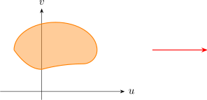
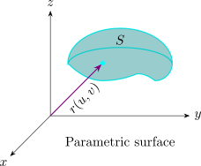
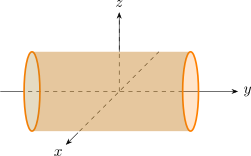
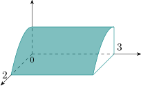

2.4 Parametric Surfaces
A curve in space is described by a vector function of one parameter. A surface needs two. Suppose that \begin {equation} \mathbf r(u,v) = x(u,v)\,\mathbf i + y(u,v)\,\mathbf j + z(u,v)\,\mathbf k \label {eq:paramsurface} \end {equation} is a vector function defined on a region \(D\) in the \(uv\)-plane. The set of points \((x,y,z)\) in \(\mathbb {R}^3\) with \[x = x(u,v) ,\qquad y = y(u,v) , \qquad z = z(u,v) ,\] as \((u,v)\) varies throughout \(D\), is a parametric surface \(S\), and these are its parametric equations. As \((u,v)\) moves over \(D\), the tip of the position vector \(\mathbf r(u,v)\) moves over \(S\).
|  |  |
Example 2.4.1. Identify and sketch the surface with vector equation \(\mathbf r(u,v) = 2\cos u\, \mathbf i + v\,\mathbf j + 2\sin u\, \mathbf k\).
Solution. The parametric equations are \(x = 2\cos u\), \(y = v\), \(z = 2\sin u\), so for every point \[x^2 + z^2 = 4\cos ^2 u + 4\sin ^2 u = 4 ,\] while \(y = v\) is unrestricted. The surface is the circular cylinder of radius \(2\) whose axis is the \(y\)-axis.

If the parameters are restricted to \(0\leq u \leq \frac {\pi }{2}\) and \(0 \leq v \leq 3\), then \(x\geq 0\), \(z \geq 0\) and \(0\leq y \leq 3\), and the surface is the quarter of the cylinder of length \(3\) lying above the first quadrant of the \(xy\)-plane.

Solution. The sphere is \(\rho = a\) in spherical coordinates, so \(\phi \) and \(\theta \) serve as parameters: \[x = a\sin \phi \cos \theta , \qquad y = a\sin \phi \sin \theta , \qquad z = a\cos \phi ,\] that is, \[\mathbf r(\phi , \theta ) = a\sin \phi \cos \theta \, \mathbf i + a \sin \phi \sin \theta \, \mathbf j + a\cos \phi \,\mathbf k ,\qquad (\phi ,\theta )\in D = [0,\pi ]\times [0,2\pi ] .\] For the sphere of radius \(9\), take \(a = 9\).
Example 2.4.3. Show that every graph \(z = f(x,y)\) is a parametric surface, and parametrise the part of the paraboloid \(z = x^2 + y^2\) below the plane \(z = 4\) in two ways.
Solution. Take \(x\) and \(y\) themselves as parameters: \(\mathbf r(x,y) = x\,\mathbf i + y\,\mathbf j + f(x,y)\,\mathbf k\). For the paraboloid this gives \(\mathbf r(x,y) = \langle x, y, x^2 + y^2\rangle \) on the disc \(x^2 + y^2\leq 4\). Alternatively, polar coordinates give \(\mathbf r(r,\theta ) = \langle r\cos \theta , r\sin \theta , r^2\rangle \) on the rectangle \(0\leq r\leq 2\), \(0\leq \theta \leq 2\pi \), whose parameter domain is simpler.
Example 2.4.4. Find a parametric representation of the cone \(z = \sqrt {x^2 + y^2}\) for \(0\leq z\leq 3\).
Solution. In cylindrical coordinates the cone is \(z = r\), so with \(r\) and \(\theta \) as parameters, \[\mathbf r(r,\theta ) = \langle r\cos \theta ,\ r\sin \theta ,\ r\rangle ,\qquad 0\leq r\leq 3,\quad 0\leq \theta \leq 2\pi .\]
Questions on this section
Stuck on something here? Ask below and it stays attached to this topic.